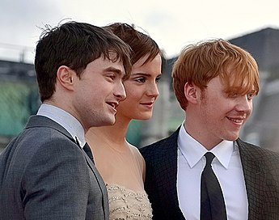

Harry Potter é uma série de filmes britânico-americana baseada na série de livros homônima da escritora J. K. Rowling. A série é distribuída pela Warner Bros. e consiste em oito filmes, iniciando com Harry Potter e a Pedra Filosofal (2001) e finalizando com Harry Potter e as Relíquias da Morte - Parte 2 (2011). Além dos oito filmes, a partir de 2016 mais cinco filmes serão lançados passados no mesmo universo, sob a chancela Mundo Bruxo de J. K. Rowling ("J. K. Rowling's Wizarding World"), começando por Animais Fantásticos e Onde Habitam. Uma das 20 Maiores série cinematográfica de maior bilheteria de todos os tempos, com US $9.1 bilhões em receitas em todo o mundo, perdendo o posto de primeiro e segundo lugar apenas para o Universo Cinematográfico Marvel e para Star
Todos os filmes se encontram na lista dos 100 filmes de maior bilheteria da história (em dólares e sem ajuste de inflação), sendo Harry Potter e as Relíquias da Morte - Parte 2 o filme da franquia que mais arrecadou nas bilheterias, ocupando o décimo terceiro no ranking mundial. As gravações iniciaram na Califórnia, nos estúdios de Hollywood. Apesar da escritora ser britânica, a saga cinematográfica de Harry Potter foi completamente produzida por Hollywood, com edições feitas na Califórnia e efeitos visuais produzidos pela indústria hollywoodiana.
A série foi produzida por David Heyman e tem Daniel Radcliffe, Rupert Grint e Emma Watson como os três personagens principais, Harry Potter, Rony Weasley e Hermione Granger, respectivamente, além de Eddie Redmayne que é o protagonista de Animais Fantásticos e Onde Habitam como Newt Scammander. Quatro diretores trabalharam na série: Chris Columbus, Alfonso Cuarón, Mike Newell e David Yates. A produção levou mais de dez anos para ser concluída, com o Arco de história principal seguindo a busca de Harry Potter para superar seu conflito com Lord Voldemort.

Principais atores de Harry Potter
Quem foi a criadora?
conhecida como J. K. Rowling, é uma escritora, roteirista e produtora cinematográfica britânica, notória por escrever a série de livros Harry Potter. Os livros ganharam uma popularidade mundial, recebendo múltiplos prêmios e vendendo mais de 600 milhões de cópias,[1] o que a tornou a série literária mais vendida da história.[2] A Warner Bros. adaptou os livros para o cinema, fazendo com que os filmes entrassem na lista de filmes de maior bilheteria.[3] Rowling já escreveu vários livros para o público adulto, Morte Súbita (2012), e sob o pseudônimo de Robert Galbraith: O Chamado do Cuco (2013), um dentre outros na série Cormoran Strike, de ficção policial.
Nascida em Yate, na Inglaterra, Rowling teve a ideia de escrever a série enquanto estava num trem indo de Manchester para Londres, em 1990.[4] Em um período de sete anos, Rowling vivenciou a morte de sua mãe, o nascimento de sua primeira filha, seu divórcio com seu primeiro marido e uma crise financeira pessoal até que, em 1997, finalizou o primeiro dos sete livros da série, Harry Potter e a Pedra Filosofal e o último, Harry Potter e as Relíquias da Morte, em 2007.
Depois do sucesso de Harry Potter, Rowling se reergueu financeiramente e foi da pobreza a uma riqueza multimilionária em cinco anos. Ela é a autora britânica com o maior número de vendas, chegando a mais de 238 milhões de libras em livros vendidos.[5] A Lista dos Ricos do Jornal Sunday Times de 2016 estimou a fortuna de Rowling em 500 milhões de libras, classificando-a como a 197ª pessoa mais rica do Reino Unido.[6] Em 2007, a revista Time nomeou-a como Pessoa do Ano, ressaltando a inspiração social, moral e política que ela deu a seus fãs.[7] Em outubro de 2010, Rowling foi nomeada a "Mulher Mais Influente da Grã-Bretanha" pelos principais editores de revista[8] e, no mesmo ano, foi classificada como a 40ª pessoa mais poderosa pela revista Forbes.[9] Ela apoia diversas instituições de caridade, tais como a Comic Relief, a One Parent Families, a Multiple Sclerosis Society of Great Britain e a Lumos (criada pela própria).[10]
J.K Rowling criadora da saga Harry Potter
Ínicio
No final de 1997, o escritório do produtor de cinema David Heyman, de Londres, recebeu uma cópia do primeiro livro que se tornaria a série de sete livros de J. K. Rowling. O livro, Harry Potter e a Pedra Filosofal, foi enviado a uma estante de baixa prioridade, onde foi descoberto por um secretário que o leu e deu a Heyman com um comentário positivo. Consequentemente, Heyman, que inicialmente não gostou do título, leu o livro e ficou impressionado com o trabalho de Rowling, e começou o processo que levaria ao título de franquia de maior sucesso cinematográfico de todos os tempos.
Entusiasmado, Heyman vendeu o direito dos quatro primeiros livros de Harry Potter para a Warner Bros. em 1999, por £ 1.000.000 (US$ 2,000,000). Rowling pediu que o elenco principal deveria ser estritamente britânico, permitindo, no entanto, a inclusão de muitos atores irlandeses, como Richard Harris (Alvo Dumbledore nos 1º e 2º filmes), e a fundição de franceses e orientais europeus em Harry Potter e o Cálice de Fogo, onde personagens do livro são especificados como tal. A autora estava hesitante em vender os direitos, porque ela "não queria dar-lhes o controle sobre o resto da história".
Embora Steven Spielberg fosse inicialmente negociado para dirigir o primeiro filme, ele recusou a oferta. Spielberg queria que a adaptação fosse um filme de animação, com o ator americano Haley Joel Osment para fornecer a voz de Harry Potter. Spielberg afirmou que, em sua opinião, não havia qualquer expectativa de lucro em fazer o filme. "É apenas um slam dunk (expressão para "enterrar a bola"). É como retirar um bilhão de dólares e colocá-lo em suas contas bancárias pessoais. Não há desafio". Após Spielberg ser deixado de lado, começaram especulações com outros diretores, incluindo: Chris Columbus, Terry Gilliam, Jonathan Demme, Mike Newell, Alan Parker, Wolfgang Petersen, Rob Reiner, Tim Robbins, Brad Silberling, e Peter Weir. Petersen e Reiner foram tirados da corrida em março de 2000. Em seguida, a lista foi reduzida a Silberling, Columbus, Parker e Gilliam. A primeira escolha de Rowling foi Terry Gilliam, no entanto, em 28 de março de 2000, Columbus foi contratado como diretor do filme, com a Warner Bros. citando seu trabalho em filmes de família, tais como Home Alone e Mrs. Doubtfire como influências para a sua decisão.
Imagem da saga de Harry Potter
Animais Fantasticos
Animais Fantasticos 1 é um filme britânico-americano de aventura e fantasia de 2016, dirigido por David Yates, sendo o primeiro de uma série de cinco filmes e uma prequela spin-off da série Harry Potter.[5] Traz a escritora J. K. Rowling em sua estreia como roteirista, onde adaptou o roteiro de seu livro homônimo.[6][7] É estrelado por Eddie Redmayne como Newt Scamander, com Katherine Waterston, Dan Fogler, Alison Sudol, Ezra Miller, Samantha Morton, Jon Voight, Carmen Ejogo, Ron Perlman e Colin Farrell.
Fantastic Beasts and Where to Find Them recebeu críticas bastante positivas,[8] tornando-se um sucesso de bilheteria ao arrecadar mais de US$ 814 milhões[9] mundialmente, se tornando a oitava maior bilheteria de 2016. Teve cinco indicações ao BAFTA 2017, incluindo Melhor Filme Britânico, vencendo Melhor Direção de Arte, bem como duas indicações para o Oscar 2017, vencendo Melhor Figurino, se tornando o primeiro filme do Mundo Bruxo de J. K. Rowling a ganhar um Oscar.
Foi lançado em formatos 3D e IMAX 4K Laser.[10] Estreou em 18 de novembro de 2016 no Reino Unido e nos Estados Unidos.[3] No Brasil e em Portugal estreou um dia antes, 17 de novembro.[11][12]
Animais Fantasticos 1
Filmes de Harry Potter em ordem cronológica
Harry Potter e a Pedra Filosofal (2001)
Harry Potter é um rapaz aparentemente normal que mora com seus terríveis tios trouxas (pessoas não-mágicas), os Dursley, em Surrey, um subúrbio localizado em Londres. No seu 11º aniversário descobre, através de um misterioso homem chamado Rúbeo Hagrid, que ele é, na verdade, um bruxo. Ele também acaba por descobrir que é muito famoso no mundo mágico por ser aquele a quem todos chamam de "O menino que sobreviveu", já que ele foi a única pessoa no mundo que sobreviveu ao ataque do terrível bruxo Voldemort, e isso quando ele era apenas um bebê. Hagrid conta a Harry que ele foi aceito na Escola de Magia e Bruxaria de Hogwarts, e que deve escolher se quer ficar com os Dursley ou ir para a escola. Já no Expresso de Hogwarts, Harry conhece Rony Weasley e Hermione Granger, e juntos descobrem sobre a Pedra Filosofal, que produz o Elixir da Vida.
Harry Potter e a Câmara Secreta (2002)
Depois de férias aborrecidas na casa dos tios trouxas, está na hora de Harry Potter voltar a estudar. Um elfo doméstico, Dobby, chega a seu encontro para alertá-lo a não voltar, pois correrá grandes perigos se voltar para Hogwarts. Coisas estranhas acontecem, no entanto, para dificultar o regresso de Harry. Persistente e astuto, nosso herói não se deixa intimidar pelos obstáculos e, com a ajuda de seus fiéis amigos, começa o ano letivo na Escola de Magia e Bruxaria de Hogwarts. As novidades não são poucas, e Harry descobre mais sobre seu misterioso passado e sobre o do seu grande inimigo, Lord Voldemort.
Harry Potter e o Prisioneiro de Azkaban (2004)
terceiro ano na Escola de Magia e Bruxaria de Hogwarts se aproxima. Porém, o assassino Sirius Black (Gary Oldman) fugiu da prisão de Azkaban e tudo indica que ele está atrás de Harry. Para proteger Hogwarts são enviados Dementadores, estranhos seres que sugam a energia vital de quem se aproxima deles. Enquanto ocorrem acontecimentos estranhos, Harry vai descobrindo um pouco mais de sua vida.
Harry Potter e o Cálice de Fogo (2005)
Durante o quarto ano de Harry, a Marca Negra aparece no céu após um ataque dos Comensais da Morte na Copa Mundial de Quadribol, e Hogwarts é anfitriã de um evento lendário: o Torneio Tribruxo. Três escolas europeias participam do torneio, com três "campeões" representantes de cada escola nas tarefas mortais. O Cálice de Fogo escolhe Fleur Delacour, Vítor Krum e Cedrico Diggory para competir uns contra os outros. No entanto, curiosamente, o nome de Harry também é produzido a partir do Cálice e faz dele um quarto campeão, resultando em um encontro e renascimento de Lord Voldemort.
Harry Potter e a Ordem da Fênix (2007)
O quinto ano de Harry começa com um ataque de dementadores em Little Whinging. Mais tarde, ele descobre que o Ministério da Magia nega o retorno de Lord Voldemort, além de ser atormentado por pesadelos perturbadores e realistas, enquanto a Professora Umbridge, uma representante do Ministro da Magia, Cornélio Fudge, toma o cargo de Defesa Contra as Artes das Trevas. Harry se torna consciente de que Voldemort está atrás de uma profecia que revela: "nenhum poderá viver enquanto o outro sobreviver". Portanto, começa a rebelião envolvendo os alunos de Hogwarts, a organização secreta Ordem da Fênix, o Ministério da Magia, e os Comensais da Morte.
Harry Potter e o Enigma do Príncipe (2009)
No sexto ano de Harry em Hogwarts, Lord Voldemort e seus Comensais da Morte estão aumentando seu terror nos mundos bruxo e trouxa. O diretor Alvo Dumbledore convence seu velho amigo Horácio Slughorn para retornar a Hogwarts como professor de poções. Há uma razão mais importante, no entanto, para a volta de Slughorn. Harry encontra um livro escolar estranhamente anotado, inscrito "Propriedade do Príncipe Mestiço". Draco Malfoy se esforça para realizar uma ação destinada por Voldemort, enquanto Dumbledore e Harry secretamente trabalham juntos a fim de descobrir o método para destruir o Lorde das Trevas uma vez por todas.
Harry Potter e as Relíquias da Morte: Parte 1 (2010)
Depois de eventos inesperados no final do ano anterior, Harry, Rony e Hermione são confiados a uma missão para encontrar e destruir as Horcruxes de Voldemort. Deveria ser o último ano em Hogwarts, mas o colapso do Ministério da Magia e ascensão de Voldemort ao poder os impede de participar. Eles descobrem o real significado das Relíquias da Morte, que são, a Capa da Invisibilidade, a Pedra da Ressurreição e a Varinha das Varinhas. O trio passa por uma longa aventura, com muitos obstáculos em seu caminho, incluindo os Comensais da Morte, os Sequestradores, as misteriosas Relíquias da Morte e a conexão de Harry com a mente do Lorde das Trevas se tornando cada vez mais forte.
Harry Potter e as Relíquias da Morte: Parte 2 (2011)
Depois de destruir mais uma das Horcruxes (o Medalhão de Sonserina) e descobrir o significado das três Relíquias da Morte, Harry, Rony e Hermione continuam a procurar as outras Horcruxes em uma tentativa de liquidar Voldemort, que já obteve a Varinha das Varinhas. O Lorde das Trevas descobre a caça de Harry e lança um ataque contra a escola de Hogwarts, onde começa uma batalha contra as forças das trevas que ameaçam livrar o Mundo Mágico para alcançar o domínio dos puro-sangue.
Crítica
Harry Potter e a Pedra Filosofal 81% (200 Comentários)[5] 64 (36 Críticos)[6] A
Harry Potter e a Câmara Secreta 82% (238 Comentários)[7] 63 (35 Críticos)[8] A+
Harry Potter e o Prisioneiro de Azkaban 90% (260 Comentários)[9] 82 (40 Críticos)[10] A
Harry Potter e o Cálice de Fogo 88% (256 Comentários)[11] 81 (38 Críticos)[12] A
Harry Potter e a Ordem da Fênix 77% (257 Comentários)[13] 71 (37 Críticos)[14] A−
Harry Potter e o Enigma do Príncipe 84% (280 Comentários)[15] 78 (36 Críticos)[16] A−
Harry Potter e as Relíquias da Morte - Parte 1 77% (288 Comentários)[17] 65 (42 Críticos)[18] A
Harry Potter e as Relíquias da Morte - Parte 2 96% (332 Comentários)[19] 87 (41 Críticos)[20] A